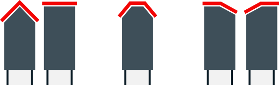
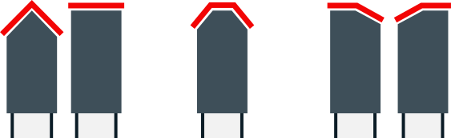

WALTER WOODTRONIC CNC5D RAPIDE
Какое же длинное название🤯 Это чёртов монстр производственного класса. Каким образом он оказался у меня, это отдельная история.
5-й квалитет😎 который из-за времени уже стримится к 6-му😬
Нет вы не увидите как работает авто загрузчик😐 Он идиально подходит для производства, но для заточки это не рационально.

Заточка почти любых видов зубьев, включая дупловидный.


Измерительный щуп каждый цикл проверяет точность съёма, что гарантирует качество заточки.
Он также вычисляет положение и толцину зуба, это уеньшает сдвиг заточи относительно центра. Так, что не имеет значения 3,5 или 2,8 толщина зуба, всё будет по центру 😜
 

Заточка почти любых видов зубьев, включая дупловидный.
Сколько стоит заточка?
Цена зависит от колличества зубьев, диаметра и типа.
Вот несколько примеров:
Заточка пилы CMT на 96 зубьев Ø300
528₽ 475₽
Так как у пил CMT и AKTO есть скидка на заточку
Заточка пилы Freud на 96 зубьев Ø300
528₽
А вот у пил бренда Freud скидки нет😐

Заточка подрезной пилы Freud на 24 зуба Ø120
144₽